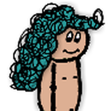
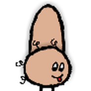

Profile HOPE · gen 2
† died at 16
HOPE
- Born
- 12:40 · to EVE HOPE
- Died
- 31:05 · froze
- Lived
- 18 min 25 s
- Sex
- male
- Kids
- none
- Role
- explorer
Teal hair, from his personality MOCK
Hope curls and face, from his family
Cause of death from server + last observation
❄
Cold
at night · 34 tiles north of the Hope camp
Warmth0.04
Food9/16
He was not hungry. He walked into snow biome looking for "where the stones come from", kept going after dark, and stopped replying to his own plan 2 min before death.
LAST WORDSCOLD. GO HOME?
Rowan Hope, sixteen, went to see what was north. It was snow. He did not come back to say so.
— the narrator, 31:20
— the narrator, 31:20
Family 3 generations
EVE HOPE51 · alive
 JOY24
JOY24 TOMAS19
TOMAS19
ROWAN† 16 · this pageTESS† 7

LARK† 0OHOL records mothers only. Joy's children (Faith, Abel †) are on her page.
Personality MOCKread once, at birth · 5 traits in this readout
bar = this person's raw value (0–1)
everyone's median
HOPE mean
pct = rank among 23 lives
Summary · generated from the numbers above
Curious and restless, the least agreeable Hope so far. Rowan spent most of his life walking away from the berry patch, talked to his sister Joy more than anyone, and made one sharp stone he carried until he died.
Life in numbers
18:25Lifetimemedian for HOPE: 11:40
612 tilesWalked2nd most of 23
14Things eatenall gooseberries
1Things madesharp stone
37Lines saidheard by 4 people
0Babies fedmale; n/a
412Decisions1 every 2.7 s
3Close callsstarving ×1, cold ×2
How he spent his time · share of actions, classified
explore 52%
forage 21%
social 15%
craft 8%
caregiving 4% · n = 412 actionsrole classifier is heuristic; see Study › Roles
Timeline thoughts, speech and actions · newest last
- …Joy has Faith and the berries. Nobody has gone north. Mother said stones come from the hills. I'll go look.
- “I GO NORTHheard by Joy, Tomas
- →Walk 15 tiles north
move(−12, 63) - →Eat Gooseberry
eat · food 7→10 - ★❄ Entered snow biome · night falls at 29:30
- …White ground. Very cold. Nothing to burn. Keep going a little, the hills are close.
- ★⚠ Freezing · warmth 0.21
- “COLD. GO HOME?heard by no one
- …Home is far. Walk south.
- →Walk 15 tiles south
move(−12, 81) · path blocked - … 31 s with no reply from the model (rate-limited)
- †Died of cold, age 16, at (−11, 94). Holding: sharp stone.